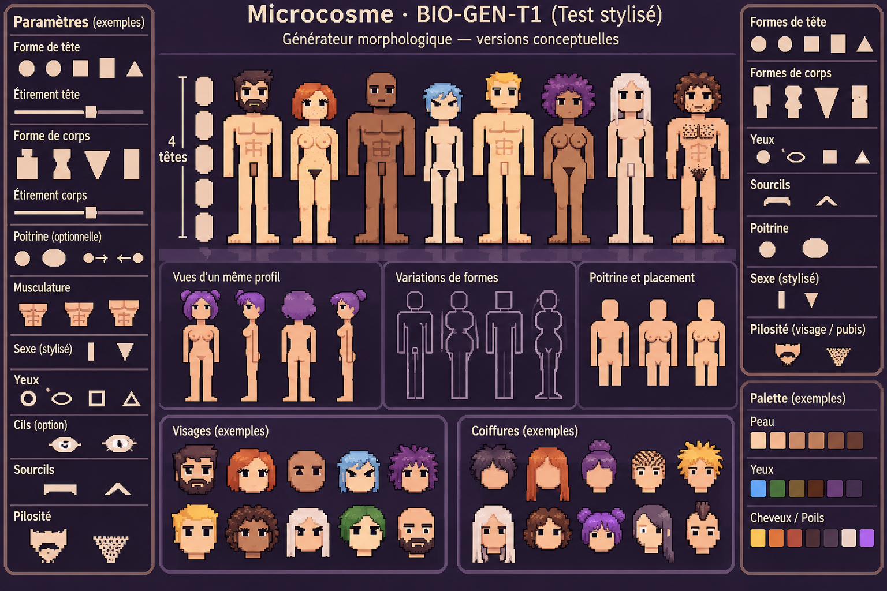

Galerie géométrique 20
Toucher pour sélectionnerRéférence artistique et comparaison B2
Direction artistique validée. T2 utilise des formes simples et une proportion neutre de quatre têtes ; B2 conserve une construction plus anatomique. La validation artistique vous appartient.

Ouvrir le laboratoire B2 pour comparaison
Les modèles ont des paramètres différents : la même graine ne garantit pas les mêmes proportions ni couleurs. Cette comparaison porte sur les deux constructions graphiques.